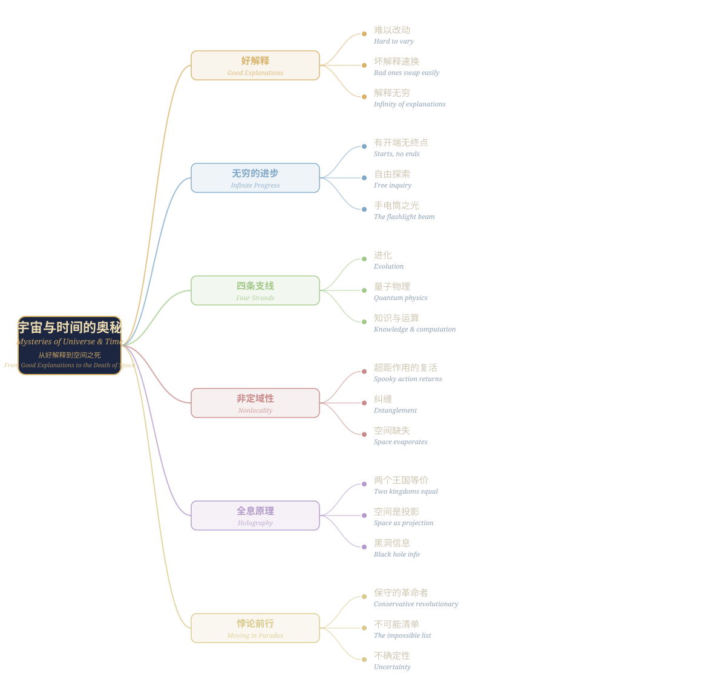

宇宙与时间的奥秘
〇 · 书籍信息
基本信息
| 书名 | 「宇宙与时间的奥秘」是套装的伞名——真正的母题藏在第一册《无穷的开始》里：进步无穷、解释无穷——宇宙的奥秘不在天上，在「我们能不断找到更好的解释」这件事本身 |
|---|---|
| 八册阵容 | 《无穷的开始》《真实世界的脉络》（戴维·多伊奇）＋《生命的诞生》《幽灵般的超距作用》《量子时刻》《图解宇宙的尺寸》《宇宙新图景》《在悖论中前行》——两条多伊奇打头阵：先立世界观，再给物理学 |
| 多伊奇 | 牛津物理学家、量子计算奠基人之一——《真实世界的脉络》给出四条支线：进化、量子物理学、知识和运算；《无穷的开始》把这套世界观推到极限：一切进步都始于「一个更好的解释」 |
| 主线 | 套装内在的一条暗线：从「什么是好的解释」出发，穿过量子不确定性、非定域性、平行宇宙，最后抵达「空间本身可能是幻象」的全息原理——每一册都在拆掉一层「显而易见」 |
| 一句话 | 人类已经按下了手电筒的开关——通向无穷的旅程已经开始了，我们的未来将是不可预知的，拥有无限多种可能性。 |
一 · 核心主题总览
这部八册套装里的四组母题：① 好解释与无穷
《无穷的开始》立全书之纲：「进步究竟是必定会走到尽头……还是无穷无尽？答案是后者」——每一个领域里进步的开端，都是「无穷的开始」；而神创论式的答案「这是上帝干的」被作者直接判为「坏解释」：「除非用很难改变的具体内容进行补充，否则这种理论完全根本没有触及问题本身——就好比『这是物理规律干的』不会让你获得诺贝尔奖，『这是魔术师干的』不能解开魔术的奥妙」。
② 平行宇宙与人择
《真实世界的脉络》把四条支线拧成世界观：「如果物理规律就像看上去那样的确是经过微调的，那么有两种可能：要么这些规律是唯一能在现实世界（即宇宙）中实现的，要么存在着拥有不同规律的其他现实世界，即平行宇宙」——人择推理不靠原则只靠逻辑：「只有在拥有天体物理学家的宇宙里，才会有人思考为什么物理常数看上去是经过微调的」。
③ 非定域性与空间之死
《幽灵般的超距作用》拆「空间」这块最顽固的常识：「牛顿引力直接产生超距作用，但至少在一个绝对空间的框架下运行。爱因斯坦的引力没有这种魔力，它把影响像涟漪一样」在时空里传——再往深处走，「阿卡尼-哈米德……恰好找到了爱因斯坦说过的不得不用的方法——在空间缺失的前提下描述物理学，在真空中学会呼吸的方法」；全息原理更进一步：「一个王国由引力统治……另一个王国仅仅由非引力的力统治，这两个王国是等价的」。
④ 保守的革命者
《量子时刻》写普朗克：「从气质上来说，普朗克是一个非常保守的人」——「多么令人啼笑皆非，这个打算将科学的边边角角都整理好的人将提出一个打击科学最深根基的想法」——科学的进步常常不是激进者推翻保守者，而是保守者被自己的证据逼成了革命者；《在悖论中前行》则把整部物理学史写成一次次「在悖论中」的前进。
二 · 第一段 无穷的开始 —— 解释的世界观—— 好解释 · 坏解释 · 无穷进步 ——
为什么进步无穷
《无穷的开始》开宗明义：「虽然进步不一定有结束，但它必然有开端：一个起因，或一个导致进步开始的事件，或一个使进步产生并蓬勃发展的必要条件。每一个这样的开端，都是从该领域的角度来看的『无穷的开始』。很多这样的开端在表面上似乎并无关联，但它们都是现实的同一个属性的某个方面」——进步的引擎不是资源而是解释力：人之所以为「万物的解释者」，是因为我们能创造知识，而知识的增长没有上限。推荐序把它说得更直白：「它永远在变，没有尽头。当人类终于开始自由探索并相互学习、相互借鉴之后，我们对这个世界的认知就好像一束从手电筒中射出去的光，从此开始了一段没有终点的旅程」。
◆ 语言学习 · 概念 · 解释力
| 无穷的开始 | 每个领域进步的开端：同一属性的各个侧面 |
|---|---|
| 万物的解释者 | 人的定义：不是「理性动物」而是能创造解释的动物 |
| 知识的增长 | 没有上限的引擎：解释可以无限改进 |
| 自由探索 | 进步的制度前提：相互学习、相互借鉴的社会 |
句型 ｜ 「进步究竟是必定会走到尽头……还是无穷无尽？答案是后者。」——全书的判词：进步不是一条会走完的路，是一种会自我延续的活动——悲观主义不是谦虚，是对解释力的低估。
好解释的判据
多伊奇给「知识」上了双重标准：「这是上帝干的」是坏解释——「除非用很难改变的具体内容进行补充，否则这种理论完全根本没有触及问题本身」；好的解释触到了现实的肌理，所以难以被替换：你可以给日心说补一圈本轮来挽救观测误差，但每补一圈它就更丑一分，直到被更简单的解释取代——「可检验性」只是入场券，「难以改动」才是真判据。同书还有一句证据论的妙语：「每个晴朗的夜晚，你的屋顶都可能被从天而降的证据击中，如果你知道要寻找什么以及怎样去寻找，就能获得诺贝尔奖」——证据早已遍地都是，缺的永远是更好的解释。
◆ 语言学习 · 概念 · 双重判据
| 坏解释 | 「上帝干的」式答案：不触及问题，随便可换 |
|---|---|
| 难以改动 | 好解释的标志：内容被现实卡死，改一处就崩 |
| 可检验性 | 入场券而非判据：能被证伪还不够，还要难改 |
| 天降证据 | 宇宙线、星光、DNA：证据遍地，缺的是解释 |
习语 ｜ 「每个晴朗的夜晚，你的屋顶都可能被从天而降的证据击中。」——证据论的最美表述：知识的瓶颈从来不在材料，在头脑——诺贝尔奖的排队名单里，永远是人而不是光子。
三 · 第二段 真实世界的脉络 —— 四条支线—— 进化 · 量子 · 知识 · 运算 ——
四条支线一个世界观
《真实世界的脉络》被介绍为「描述了我们当前知识中最深刻的 4 条支线——进化、量子物理学、知识和运算，以及它们带来的世界观」——四条线各说各话，却在多伊奇手里汇成一幅图景：现实的最深层是可计算的，知识是量子多宇宙中的结构性现象，进化是解释在生物圈的实现方式。套装把它放在第二位是有讲究的：先看《无穷的开始》怎么用这套世界观，再回头看它是从哪里长出来的。
◆ 语言学习 · 概念 · 四支线
| 进化 | 变异与选择：解释在生物圈的粗糙版本 |
|---|---|
| 量子物理学 | 多宇宙的物理底座：现实比看起来更宽 |
| 知识 | 可无限改进的解释：人独有的进化加速器 |
| 运算 | 可计算性：图灵-丘奇的通用性延伸到物理 |
句型 ｜ 「进化、量子物理学、知识和运算。」——四条支线的名字本身就是目录：任何一条单看都像专科，合起来才是一副完整的世界观——这是多伊奇全部写作的骨架。
平行宇宙与人择推理
物理常数的「微调」之谜在多伊奇手里有一种冷静的解法：「要么这些规律是唯一能在现实世界（即宇宙）中实现的，要么存在着拥有不同规律的其他现实世界，即平行宇宙。对于前者，我们应当预期，对于物理规律为什么是这样，必定存在一个解释」——而后者给出人择推理：「只有在拥有天体物理学家的宇宙里，才会有人思考为什么物理常数看上去是经过微调的。这种解释称为『人择推理』。据称它遵从一条称为『弱人择原理』的原则，不过实际上根本不需要原则，只需要逻辑」——微调不是宇宙为我们定制的礼物，是观测者的狭隘视角。
◆ 语言学习 · 概念 · 人择
| 微调 | 物理常数仿佛为生命量身定制：谜题的来源 |
|---|---|
| 平行宇宙 | 各有各的物理规律：狭隘视角的出路 |
| 弱人择原理 | 「根本不需要原则，只需要逻辑」 |
| 狭隘视角 | 只在能提出问题的宇宙里提问：幸存者偏差的宇宙学版 |
习语 ｜ 「实际上根本不需要原则，只需要逻辑。」——人择推理的祛魅：听起来玄妙的宇宙学论证，内核不过一句「能提问的宇宙里才有提问者」——把神秘感还给逻辑，是这套书一贯的口味。
四 · 第三段 幽灵般的超距作用 —— 空间之死—— 非定域性 · 纠缠 · 全息 ——
从超距作用到非定域性
《幽灵般的超距作用》梳理「影响如何传播」的千年公案：「牛顿引力直接产生超距作用，但至少在一个绝对空间的框架下运行。爱因斯坦的引力没有这种魔力，它把影响像涟漪一样」在时空里传——然而量子纠缠又把「幽灵般的超距作用」请了回来：定域性原则的两层含义（可分性与局域作用）在贝尔不等式的检验下纷纷失守。更惊人的是终点：「阿卡尼-哈米德……已经恰好找到了爱因斯坦说过的不得不用的方法——在空间缺失的前提下描述物理学，在真空中学会呼吸的方法」——爱因斯坦晚年亲笔写下的疑虑成了后人的研究纲领。
◆ 语言学习 · 概念 · 非定域性
| 超距作用 | 牛顿式魔法：不用媒介直接传递影响 |
|---|---|
| 可分性 | 定域性第一层：隔开的两件事互不依赖 |
| 局域作用 | 定域性第二层：影响以不超光速的方式传播 |
| 空间缺失 | 终极纲领：把空间当作衍生品而非舞台 |
句型 ｜ 「在空间缺失的前提下描述物理学，在真空中学会呼吸的方法。」——全册最险的一步：物理学正在学习没有空间这个变量的物理学——「幽灵」不是丑闻，是线索。
全息原理
书里把最大的怪论留给了黑洞与全息：「如果设一个大奖，奖给最容易让人迷惑的物理学隐喻，全息原理将是强劲的竞争者」——「一个王国由引力统治（用爱因斯坦的广义相对论和他的量子阐述来描述），另一个王国仅仅由非引力的力统治（用量子场论加上规范不变性来描述），这两个王国是等价的」——同一个物理现实可以有两套完全不同的描述，就像三维物体与它的二维全息底片：空间本身可能是投影。
◆ 语言学习 · 概念 · 全息
| 全息原理 | 区域的全部信息写在边界上：体与面等价 |
|---|---|
| 两个王国 | 引力王国与非引力王国的对偶：同一现实的两种写法 |
| 霍金悖论 | 黑洞蒸发后信息去哪：纠缠与全息的交汇处 |
| 空间是投影 | 维度可能「噗」的一下幻灭的猜想 |
习语 ｜ 「奖给最容易让人迷惑的物理学隐喻，全息原理将是强劲的竞争者。」——作者的自嘲式颁奖：当代物理最前沿拿「你最看不懂」当卖点——但每个反直觉的隐喻背后，都是一次常识边界的重新勘测。
五 · 第四段 量子时刻与悖论前行 —— 保守的革命者—— 普朗克 · 不确定性 · 物理学史话 ——
保守的普朗克
《量子时刻》给量子革命挑了一位最不像革命者的主角：「从气质上来说，普朗克是一个非常保守的人」——出身牧师与律师之家，「学会了保持低调来度过骚乱的时代」；科学对他而言是「一个绝对的、独立于人类行为的世界」，是乱世里的庇护所——「多么令人啼笑皆非，这个打算将科学的边边角角都整理好的人将提出一个打击科学最深根基的想法」——量子概念不是横空出世的宣言，是保守者在黑体辐射数据的逼迫下不得已迈出的一步。
◆ 语言学习 · 概念 · 逼出来的革命
| 保守者 | 普朗克的自我认知：整理边角而非颠覆根基 |
|---|---|
| 黑体辐射 | 数据的顽固性：让保守者不得不引入量子 |
| 不确定性 | 奇妙而非恐怖：量子世界的签名 |
| 庇护所 | 科学对乱世中人的意义：绝对与独立于人心 |
句型 ｜ 「这个打算将科学的边边角角都整理好的人将提出一个打击科学最深根基的想法。」——科学史最辛辣的幽默：革命不需要革命者的气质，只需要诚实地面对数据——证据面前，保守主义者走得比谁都远。
在悖论中前行
收官一册《在悖论中前行》把方法说破：物理学史不是「已知」不断扩大的平滑曲线，而是一连串悖论的接力——迈克尔逊自信「物理学基础只有极其渺茫的机会被取代」，话音未落相对论登场；「虽然它在无数应用中都既强大又准确，但并没有能力预测其后继者的内容」——所以「不可能」清单本身就是最值得怀疑的清单；每一代物理学家都在悖论中前行，悖论不是失败，是下一次进步的起点——这正是《无穷的开始》「解释无穷」的历史注脚。
◆ 语言学习 · 概念 · 悖论接力
| 迈克尔逊的预言 | 1894 年的自信：物理学已近完成——两年后被证伪 |
|---|---|
| 悖论 | 理论与实验的裂口：进步的孵化器 |
| 不可能清单 | 最值得怀疑的清单：连重力缺席都没想到 |
| 解释无穷 | 多伊奇的母题在历史里的回声 |
习语 ｜ 「虽然它在无数应用中都既强大又准确，但并没有能力预测其后继者的内容。」——对一切「科学已近完成」论的终身警告：强大与准确是旧范式的美德，恰恰是新范式最晚被发现的原因。
六 · 人物图鉴与成长弧线—— 主角配角 · 一张表看穿 ——
主要人物
戴维·多伊奇——两册主角的理论家——牛津量子物理学家、量子计算的奠基人之一：用「好的解释」给进步、自由意志与人的未来重新立传
阿尔伯特·爱因斯坦——被反复引用的幽灵——从定域性原则的两层含义到「空间-时间连续统或许必须放弃」：晚年疑虑成了后人的纲领
马克斯·普朗克——保守的革命者——「打算将科学的边边角角都整理好的人」却打出了量子这张牌：科学革命的另一种发起方式
阿卡尼-哈米德——在真空中学会呼吸的人——在空间缺失的前提下描述物理学：全息时代的旗手
次要人物（功能位）
| 万维钢 | 中文版推荐序作者——「真正有营养的阅读都是困难的」：把世界观转变写成读者邀请函 |
|---|---|
| 乔斯林·贝尔 | 脉冲星的发现者——「起初被人们认为是外星智慧生命发出的信息」：证据与解释的活教材 |
| 乔治·穆瑟 | 《幽灵般的超距作用》作者——把非定域性从丑闻讲成线索的科学作家 |
| 尼尔马拉·纳塔瑞杰 | NASA 图册系列的文字作者——《行星全书》的执笔人：让高清影像开口说话 |
七 · 主题与象征—— 每个道具都在说话 ——
| 手电筒 ↔ 认知旅程 | 进步的意象——「一束从手电筒中射出去的光」：没有终点的旅程，无穷的开始 |
|---|---|
| 屋顶 ↔ 证据 | 证据论——每个晴朗的夜晚都可能有天降的证据击中屋顶：缺的从来不是证据，是解释 |
| 涟漪 ↔ 影响传播 | 时空观——爱因斯坦的引力把影响像涟漪一样传播：超距作用的祛魅与复活 |
| 全息底片 ↔ 空间 | 维度猜想——三维王国与二维边界等价：空间可能只是投影 |
| 悖论 ↔ 进步 | 科学史观——在悖论中前行：裂口不是失败，是下一次解释的产房 |
八 · 写作手法赏析—— 怎么写，就能怎么学 ——
① 世界观先行
把《无穷的开始》放在套装首位——先给读者装上「好解释」的操作系统，再运行量子与时空的程序：阅读顺序即学习顺序
② 悖论叙事
每册都围绕一个「想不通」展开——超距作用、不确定性、微调之谜：把困惑本身当作叙事引擎
③ 专家加普通人双轨
多伊奇讲哲学，图册讲观测——理论与影像互为注脚：一套书同时喂饱头脑与眼睛
④ 译名脚注扎实
「这是外星智慧生命发出的信息，后来被证实来自一颗脉冲星」——译注把史料讲成故事：脚注也是正文
⑤ 系列互文
四条支线在多册间反复出现——《真实世界的脉络》提出、《无穷的开始》应用、《超距作用》实证：套装不是合集而是论文集
九 · 名段欣赏—— 原文精读 · 逐段赏析 ——
十 · 金句摘录—— 14 条 · 中英对照 · 带出处 ——
"真正有营养的阅读都是困难的，如果你能克服这些困难，那么你将会获得无与伦比的收获，因为你的世界观将被一些更好的解释所改变。"—— 推荐序 ·《无穷的开始》
"进步究竟是必定会走到尽头（不管是毁于灾难还是在某种程度上完成），还是无穷无尽？答案是后者。"—— 《无穷的开始》第一章
"每一个这样的开端，都是从该领域的角度来看的「无穷的开始」。"—— 《无穷的开始》
"除非用很难改变的具体内容进行补充，否则这种理论完全根本没有触及问题本身——就好比「这是物理规律干的」不会让你获得诺贝尔奖，「这是魔术师干的」不能解开魔术的奥妙。"—— 《无穷的开始》· 坏解释
"每个晴朗的夜晚，你的屋顶都可能被从天而降的证据击中，如果你知道要寻找什么以及怎样去寻找，就能获得诺贝尔奖。"—— 《无穷的开始》· 证据
"《真实世界的脉络》描述了我们当前知识中最深刻的 4 条支线——进化、量子物理学、知识和运算，以及它们带来的世界观。"—— 《无穷的开始》· 作者介绍
"只有在拥有天体物理学家的宇宙里，才会有人思考为什么物理常数看上去是经过微调的。"—— 《真实世界的脉络》· 人择
"牛顿引力直接产生超距作用，但至少在一个绝对空间的框架下运行。爱因斯坦的引力没有这种魔力，它把影响像涟漪一样传播。"—— 《幽灵般的超距作用》
"他和他的同事已经恰好找到了爱因斯坦说过的不得不用的方法——在空间缺失的前提下描述物理学，在真空中学会呼吸的方法。"—— 《幽灵般的超距作用》
"一个王国由引力统治……另一个王国仅仅由非引力的力统治……这两个王国是等价的。"—— 《幽灵般的超距作用》· 全息原理
"多么令人啼笑皆非，这个打算将科学的边边角角都整理好的人将提出一个打击科学最深根基的想法。"—— 《量子时刻》· 普朗克
"这不是一个完全像钟表机械一样的宇宙，科学家们认识到了这个世界包含着看起来随机的行为。"—— 《量子时刻》· 不确定性
"虽然它在无数应用中都既强大又准确，但并没有能力预测其后继者的内容。"—— 《无穷的开始》· 迈克尔逊
"当人类终于开始自由探索并相互学习、相互借鉴之后，我们对这个世界的认知就好像一束从手电筒中射出去的光，从此开始了一段没有终点的旅程。"—— 推荐序
十一 · 拓展阅读—— 原文 · 词条 · 译文 ——
十二 · 个人感悟与心得—— 三点心得 ——
三点感悟
① 把「解释」当作第一指标
多伊奇方法论的迁移价值：无论做什么判断，先问手里的是好解释还是坏解释——「上帝干的」式答案（拍脑袋结论、专家背书、传统如此）的共同点是不触及问题本身。
② 证据不缺，缺的是看见
屋顶上的诺贝尔奖：材料与数据早已遍地都是——信息时代的稀缺资源从来不是数据，是把数据变成好解释的那颗头脑。
③ 对「不可能」清单保持怀疑
迈克尔逊的教训：「强大又准确」的体系最没有能力预测自己的继任者——任何行业的「天花板论」，都值得先查一查它基于哪一年的知识。
这套书最动人的不是任何一个结论，而是它反复演示的一个动作：把「显而易见」放在被告席上——空间、时间、确定性、进步的边界，一一过堂。开释者少，定罪者多；而每一次定罪，都换来一个更大的世界——无穷的开始，从来不在远方，就在你愿意重新解释的那一件事里。
十三 · 一页速查（复习用）
| 好解释 | 触及问题本身、难以改动：知识的真判据 |
|---|---|
| 无穷的进步 | 每个领域都有开端、没有终点 |
| 人择推理 | 微调之谜：只需逻辑不需原则 |
| 非定域性 | 从超距作用到空间缺失：幽灵是线索 |
| 保守的革命者 | 普朗克悖论：诚实的人被迫革命 |
十四 · 全书思维导图—— 一图纵览 ——

一图纵览全书骨架 · 中英双语对照 · 手机端可左右滑动查看全图